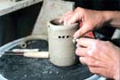

| How to
Make a Puzzle Mug
by Delia Robinson
Below: Potter Jennifer Boyer, a studio potter in East Montpelier,
Vermont, USA, demonstrates one method of making a puzzle mug.
DIRECTIONS- Photo Credits-- Jim Eaton
To illustrate the instructions for a Puzzle mug, Vermont potter
Jennifer
Boyer made a stripped down and slightly exaggerated version so the
mechanics are more easily revealed.
The
mug is thrown and the rim is split, creating a Y. The two top edges
are brought up and closed together, forming a hollow tube running
around the rim of the mug.

After
the mug is leather hard, trim the bottom, if needed. Cut a hole
in the tubular rim of the mug where you plan to attach the handle.
Set the mug aside while you prepare the handle.
Using
Boyer's method, the hollow handle, which will serve essentially
as a drinking straw, is thrown. It could also be extruded. It is
possible to pull a hollow handle by placing a flexible tube or cord
in the center of the clay, leaving it there throughout the shaping
of the handle, and removing it when it is time to attach thehandle
to the cup. This is miserably tricky, however, so a thrown hollow
handle is recommended.
To throw a hollow handle, open a bottomless pot, pushing all the
clay
out into a ring. Open the ring creating a circular form with a U
shape.
Pull up the sides and close them, forming a hollow doughnut of
clay.
Set
it aside until it is firm enough to handle without collapsing. When
firm, cut so it assumes a handle configuration.
Many old puzzle mugs have a tubular round handle, others are more
more refined. To keep the hollow patent during extensive alterations
to the shape, run a flexible cord or tube through the handle. This
is easily pulled out when the handle is ready to be attached.
 Align
the handle to the cup so the top corresponds with the hole in the
tube at the cup rim. Cut a hole through the cup wall at bottom of
the handle. The holes should correspond in size and placement to
the ends of the hollow handle. Align
the handle to the cup so the top corresponds with the hole in the
tube at the cup rim. Cut a hole through the cup wall at bottom of
the handle. The holes should correspond in size and placement to
the ends of the hollow handle.
The handle will be attached over these holes after the next steps
are
completed.
Set
the handle aside and pick up the mug again. An inch or so under
the lip of the mug, below the tube and beneath the spot the mouth
would be placed when taking a drink, cut a little pattern of holes
or a filigree. Do the same on the cup back. In the old mugs this
was often very fancy and sometimes continued around the circumference
of the cup.
The idea is to cause the drinker, when lifting the cup to the
mouth in
the usual way, to pour the beverage down his shirt front.
Next,
additional holes (three or four) are pierced through the outer wall
of the rim tube. In deciding how to place these holes, consider
that one will be used to drink through, but the others will need
to be covered with fingers. The only way to drink is to cover the
extra
holes in the rim. While you are working, if debris falls into the
tunnels, blow it out. Puff air through the openings to make sure
the tunnels have remained open, and then attach the handle.
You
now have a hollow tube running from the bottom interior of the mug,
up the inside of the handle and around the inside of the rim. This
is the path the fluid will follow when the cup is drunk from.
Decoration should be elaborate to entice the eye away from the
trick.
Before glazing, plug all openings into the tubes with plasticine
or wax.
Immediately after dipping the mug in glaze, blow gently on the dribble
holes to clear them of glaze. Reopen the other openings by removing
the plasticine and clearing away any glaze that might obstruct them.
A triple whammy puzzel mug has a frog in the bottom of the cup,
a
whistling frog climbing the handle, and frog drinking spouts.
Article courtesy of Delia Robinson.
© Delia Robinson
Next >
How to Make a Nightingale Cup
Related Articles
How to Make a Nightingale Cup
In Their Cups - The Story of the English
Puzzle Mug
How to Make a Clay Whistle
More Articles
|


{kind=link}
{kind=link}
{kind=link}
{kind=link}
{kind=link}
{kind=link}
{kind=link}
{kind=link}
{kind=link}